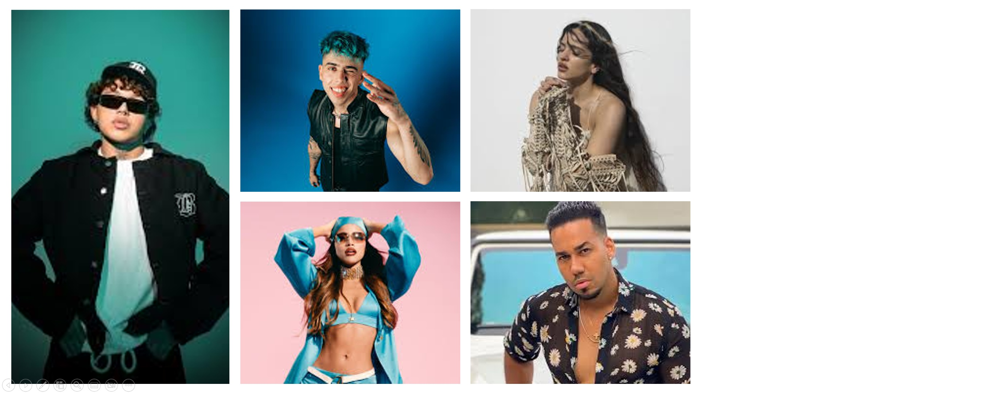

TOP Mejores artistas del año 2026
¡El año 2026 ha empezado lanzando fuego! Aquí te presentamos los artistas más populares en lo que vamos el año.
- TOP 1: Beéle ¡La canción No tiene sentido, ya tiene más de 10 millones de reproducciones en solo Spotify!
- TOP 2: Rosalia ¡El nuevo álbum LUX tiene mucho que contar, La perla es el más reciente éxito con 8 millones de reproducciones desde su lanzamiento el 7 de noviembre!
- TOP 3: Luck Ra ¡El cantante argentino que está en su gira internacional está llegando al top con su canción icónica La morocha!
- TOP 4: Romeo Santos ¡Se ha reescrito la historia de la bachata la canción Dardos con Prince Royce tiene más de 27 millones de visitas en YouTube!
- TOP 5: Emilia ¡La colaboración entre esta artista Nicki Nicole y TINI ha dejado a toda la audiencia emocionada por más, Blackout será un hit por bastante tiempo!
Recuerda seguirnos en nuestras redes sociales para no perderte nada, tu corazón late con latido musical.
